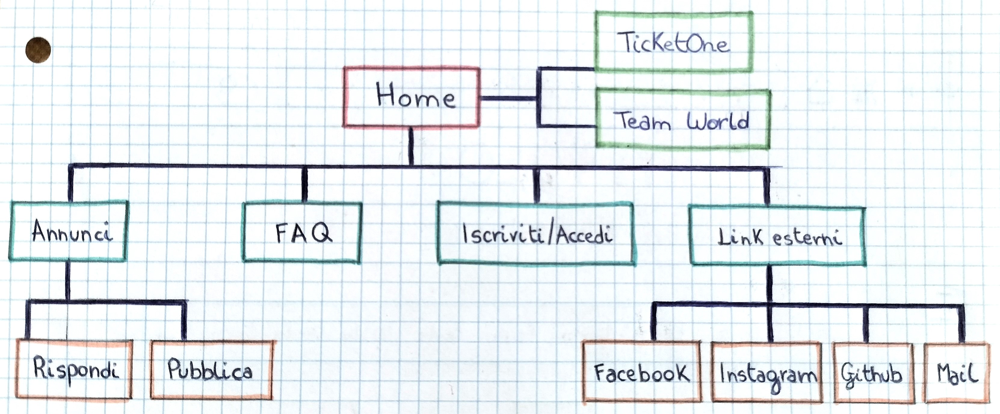
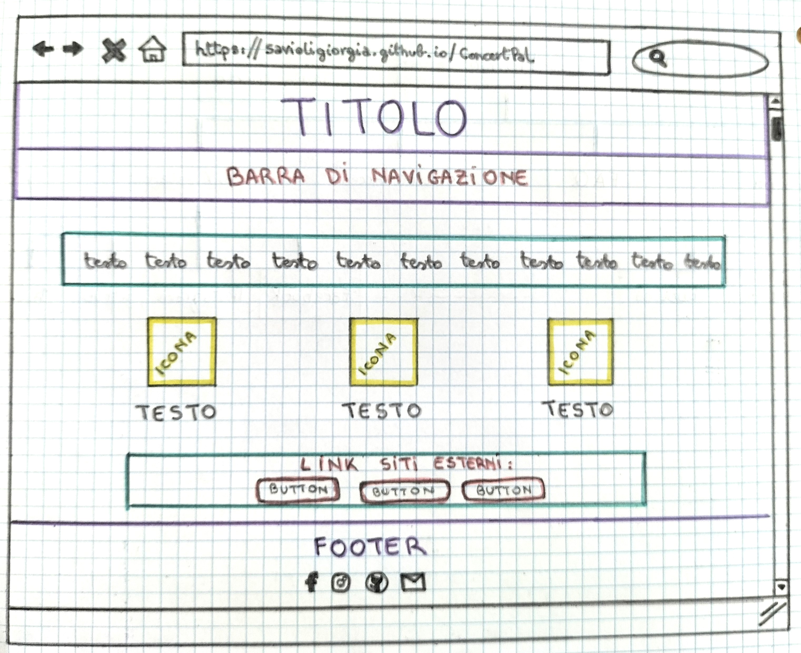
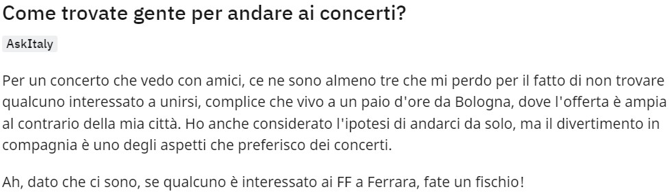
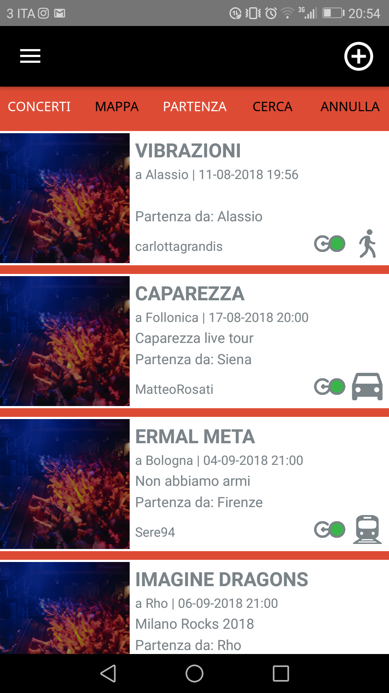
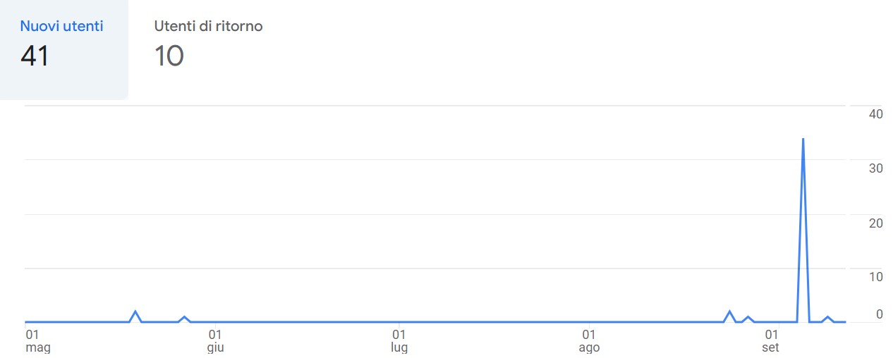

Documentazione
Abstract
Rivolgendosi a tutti gli amanti della musica dal vivo, ConcertPal è il sito adatto a chi non ha voglia di andare da solo ad un concerto e cerca una buona compagnia con cui passare la serata.
Si tratta di un progetto innovativo, perché non solo connette persone con gli stessi gusti, ma gli permette anche di incontrarsi e divertirsi ad un evento musicale a cui altrimenti avrebbero rinunciato per paura di non goderselo allo stesso modo da soli.
Project Management Plan
BenchmarkingConcertPal si pone l’obiettivo di mettere in comunicazione persone che vogliono andare ad uno stesso concerto e non hanno trovato la compagnia giusta. Di conseguenza, si rivolge ad un target utente molto ampio, che comprende persone di qualsiasi età, genere, provenienza, ceto sociale e credo religioso. Analizzando lo scenario di mercato nel macro-ambito della musica e dei concerti, ho individuato tre siti che affrontano un tema molto vicino a quello presentato da questo progetto: ClubSharing, GoGoSound e Tastebuds.
1) Clubsharing nasce come progetto di fun-ridesharing, che permette alle persone di condividere un passaggio-auto per lo stesso festival o la stessa serata di clubbing.
2) GoGoSound nasce come progetto di carpooling e ha avuto molto successo fino a qualche anno fa, tanto da essere l’oggetto di articoli su testate online come LaRepubblica.it, o di servizi su La Nuova TV.
3) Tastebuds è progetto nato a Londra con l’obiettivo di permettere agli utenti di conoscere nuove persone e nuova musica in base agli interessi in comune.
Architettura del sito
Wireframe
Look and feel
- I font che ho scelto per il sito sono: 'Fjalla One', sans-serif per titoli e parti in evidenza e 'Bree Serif', serif per testi;
- Per quanto riguarda la palette di colori, ho optato per diverse sfumature di viola e lilla, che richiamano le luci presenti ai concerti o ai festival;
- Ho, infine, deciso di disporre pochi elementi sulla pagina, in modo da creare un effetto aperto e arioso.
I linguaggi web che ho utilizzato sono:
- HTML;
- CSS;
- JavaScript.
Gli strumenti tecnologici utilizzati a supporto della progettazione web sono stati:
- Sublime Text 3 per la scrittura del codice;
- Fontawesome per le icone;
- Google Fonts per la scelta dei font;
- Google Immagini per lo sfondo in header e per le foto profilo degli utenti;
- W3Schools - HTML Color Names per scegliere i colori del sito;
- W3Schools e Bootstrap per codice Javascript e altri aspetti di grafica;
- Github per la pubblicazione del sito online;
- Facebook e Instagram per la promozione;
- Google Analytics per la valutazione dei risultati.
Communication Strategy
BackgroundL'idea per questo sito nasce da un commento, riportato qui sotto, lasciato su Reddit otto anni fa da un ex-utente della piattaforma.
Dopo qualche ricerca, ho appurato che ci fosse bisogno di un servizio come ConcertPal, perché lo scenario di mercato su questo tema è decisamente povero di competitors. O meglio, esistono pagine web simili, ma non vengono più utilizzate. Infatti, Clubsharing e GoGoSound non possiedono un sito, sembrano non essere più attivi sui social (Facebook e Instagram) dal 2019 e le loro applicazioni per mobile non sono più disponibili negli App Store.
In ogni caso, analizzando i tre competitors, ho notato alcuni punti di forza e altrettanti punti di debolezza.
- In ClubSharing:
- è efficace il tema della condivisione delle risorse e della sostenibilità e la possibilità per gli utenti di pubblicare richieste direttamente nella sezione “Community” della pagina Facebook e di ricevere risposte tramite i commenti.
- tuttavia, gli utenti non capiscono se devono usare il sito o i social networks e mostrano difficoltà anche nell’utilizzo dell’applicazione (molti, infatti, commentano sotto i post di Facebook chiedendo come usare il portale).
- In GoGoSound:
- è interessante il fatto che i post su Facebook non riguardino solo festival in Italia, bensì in tutta Europa, e servano spesso per ricordare eventi importanti nella storia della musica. Inoltre, l'interfaccia dell’applicazione è più semplice e intuitiva (nessuno ha manifestato difficoltà nell’utilizzo).
- tuttavia, la grafica è poco curata, perché viene usata sempre la stessa immagine per tutti gli annunci e sono presenti troppi colori senza caratteristiche cromatiche in comune (rosso, blu, bianco, verde, grigio e nero).

- In Tastebuds:
- sono presenti chat tra utenti che aumentano l’interazione e numerose recensioni positive da parte di iscritti e figure di riferimento, come BBC, theguardian, Glamour, Time e NME.
- tuttavia, l'applicazione è scaricabile solo su dispositivi Apple e il sito non è definibile come tale, perché mostra solo una piccola preview della barra di navigazione e per poterlo effettivamente usare bisogna iscriversi.
L'obiettivo di ConcertPal è quello di collegare persone con gli stessi interessi musicali e di aiutare tutti coloro che non vogliono andare soli ad un concerto a trovare il compagno perfetto.
Per fare questo, il sito prevede una sezione "Annunci", in cui tutti gli utenti potranno rispondere ai messaggi e alle richieste degli altri o pubblicarne a loro volta.
Questo progetto si rivolge a ragazzi/e tra i 18 e i 30 anni, che più di tutti amano l'esperienza condivisa della musica dal vivo.Per raggiungere questo particolare gruppo di utenti, bisogna puntare tutto sui social da loro più utilizzati, ovvero Instagram e Tiktok, facendo un ampio uso di stories, sondaggi e collaborazioni con gli artisti più in voga del momento.
Ovviamente, questo non vuol dire escludere dal target audience le persone Over 30. Anzi, anche con loro bisognerà attuare una strategia analoga, ma utilizzando altri mezzi. Si parla, in questo caso, di Facebook e Twitter e di post riguardanti grandi artisti o eventi della storia della musica.
Purtroppo, al momento il sito non è ancora stato tradotto in altre lingue, perciò è riservato al pubblico italiano e a chi comprende e parla la lingua. Inoltre, il requisito per potersi iscrivere è la maggiore età, per ovvie ragioni di sicurezza.
Il messaggio che ConcertPal vuole trasmettere è non bisogna mai rinunciare al divertimento di un concerto solo perché non si sa con chi andarci o perché "non si ha più l'età". Con questo sito, infatti, si possono trovare nuovi amici di ogni genere, provenienza ed età, con cui cantare e ballare le proprie canzoni preferite.
Come accennato sopra, per comunicare con il pubblico e promuovere il sito si utilizzeranno prevalentemente mezzi online. Verrà creato, infatti, un account Instagram e un account Facebook, per cercare di raggiungere sia il target principale sia quello secondario. Inoltre, si metterà a disposizione un indirizzo di posta elettronica, che gli utenti potranno utilizzare per chiedere informazioni e chiarimenti.
In futuro, se ci fosse disponibilità di budget, sarebbe bene anche optare per della pubblicità via stampa (volantini e produzione grafica pubblicitaria) e radio (messaggi promozionali radiofonici).
All'inizio del progetto mi sono prefissata di ottenere almeno 15 like e 20 followers su Instagram, 30 utenti unici sul sito web, con almeno 200 visualizzazioni delle pagine che lo compongono.
Ad oggi (12/09/2022), posso dire di aver raggiunto con successo tutti gli obiettivi che mi ero prefissata.
